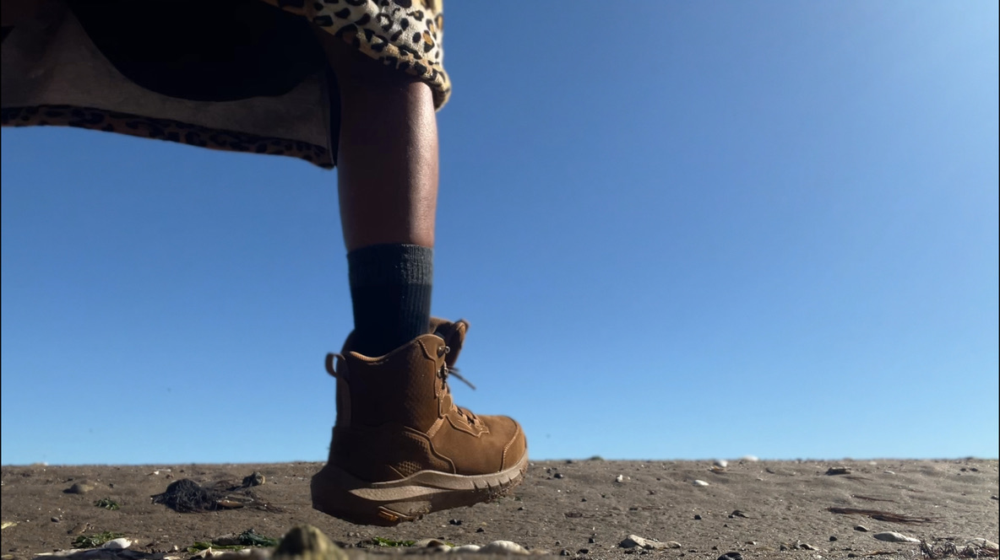
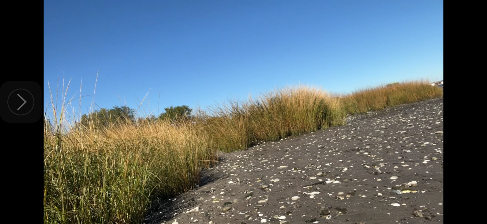

Transdisciplinary humanitarian and technological initiative
Mission
Grounds for Peace is a transdisciplinary humanitarian and technological initiative re-engineering the interface between human bodies, public infrastructure, and planetary systems. We unite somatic intelligence, quantum materials research, and ecological design to create infrastructures that sustain life without harm. Our work bridges deep embodiment with high-level technological innovation to prototype new ground systems—moisture-conductive sidewalks, regenerative urban surfaces, trauma-free emergency signaling, and self-generating water stations.
By aligning humanitarian ethics with material science and design, we build pathways toward infrastructures that feel, breathe, and support human and planetary well-being.
Problem Statement

The infrastructures that hold our daily lives—roads, schools, workplaces, and emergency systems—have been designed around mechanical efficiency, not biological integrity. These environments injure the spine, compress the lungs, distort gait, overload the nervous system, and contribute to the climate emergency through toxic, rigid materials.
This is not accidental. It reflects an inherited design paradigm that normalizes harm—rooted in extractive economics and disembodied science. The result is a civilization whose built environments reproduce trauma at both cellular and planetary scales.
Grounds for Peace exists to reverse this logic. We are developing a framework for Living Infrastructure: systems designed with the body as a reference point and the Earth as collaborator. Our aim is to restore somatic coherence at the infrastructural level—to make cities, tools, and materials that support life instead of degrading it.
Transdisciplinary Approach
We work at the intersection of somatics, physics, design, and ecology, translating principles of embodied intelligence into the language of material innovation.
Somatic Intelligence: The human body as sensor, feedback loop, and design guide.
Quantum & Nano Inquiry: Collaboration with scientists exploring matter at micro and sub-atomic levels to identify possibilities for regenerative materials.
Ecological Design: Translating micro-level coherence into macro-level infrastructure: roads, buildings, and soundscapes that integrate hydrological balance, soil health, and postural integrity.
Humanitarian Alignment: Every prototype—whether a sidewalk, signal, or interface—reduces harm and increases vitality for bodies, communities, and ecosystems alike.
Key Initiatives
Somatic Regulation and Co-regulation Hubs
In-person sessions for families, couples, and groups cultivating embodied awareness, co-regulation, and integrative healing. These hubs serve as living laboratories for somatic-informed infrastructure design.
Living Ground Systems

Development of shock-absorbent, moisture-conductive urban surfaces that support biomechanical health, tree-root cooperation, and climate resilience.
Auditory Ecology & Non-Traumatizing Signals
Redesign of emergency and alert systems to protect hearing and neurological health while signaling safety effectively.
Water Autonomy Technologies
Design and development of self-generating water stations informed by quantum-level and materials science principles.
Educational Biodesign Frameworks
Reimagining learning environments to support postural freedom, somatic learning, and proprioceptive safety.
Collaboration & Partnership
Grounds for Peace is designed for co-creation with scientists, engineers, designers, and institutions. Collaboration opportunities include:
Faculty research partnerships: pilots, publications, and applied research.
Institute collaborations: developing prototypes and scaling concepts.
Student fellowships and experiential studios.
Philanthropic and foundation engagement for research and prototype development.
Contact & Invitation
Grounds for Peace invites scientists, engineers, designers, and research institutions to collaborate on pilot projects and applied innovations that honor both biological and planetary integrity.
Milandi Mahasin Madiba is an Indigenous and Black American Master Somaticist™, Artist and founder of Grounds for Peace. With over 22 years of experience in somatic consulting, body-based design, and ecological advocacy, Madiba bridges embodied intelligence, cross-disciplinary research, and systemic transformation.